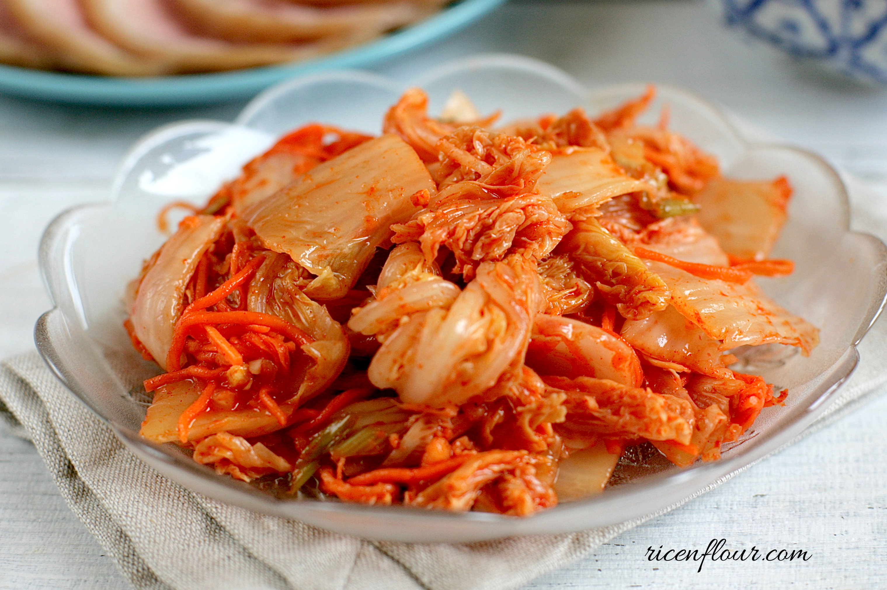
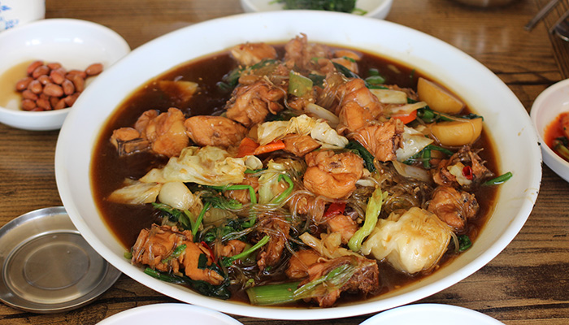
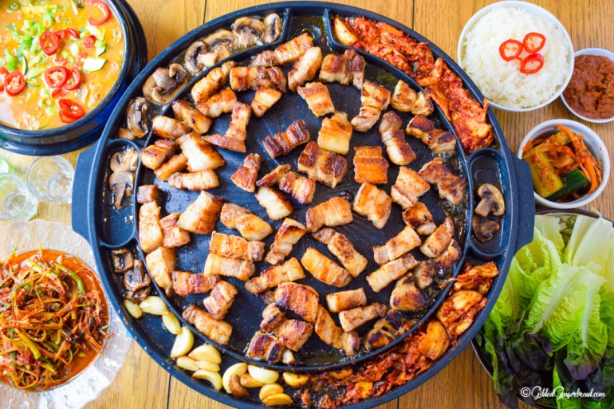

Hola bienvenidos al menu de platillos de Corea del sur.
Platillo |
Imagen |
Informacion |
| 1-KIMCHI. |
 |
El kimchi es probablemente uno de los alimentos más conocidos de la comida coreana. Se compone de distintos tipos de verduras, que se fermentan durante largo tiempo y que antaño sustituían a las verduras frescas en invierno, cuando por el frío escaseaban. Puede ser almacenado durante largo tiempo y es guarnición básica cada vez que se sientan a la mesa, aunque también puede ser ingrediente de arroces, fideos, sopas… Existen muchísimas variedades de kimchi dependiendo de la región, y es un plato picante. Consejo: no estamos acostumbrados a su sabor, y menos si lo tomamos solo, por ello recomiendo mezclarlo con carne, con arroz,…, la primera vez que lo pruebes. |
|
2-JJIMDACK..
|  |
Es un guiso de pollo cocido con salsa de soja, vegetales y noodles (fideos) de arroz que tiene un toque picante. Es típico de la ciudad de Andong, y se puede degustar en los múltiples locales del centro. Nosotros elegimos uno de ellos al azar, donde todo estaba escrito en coreano, la camarera sólo hablaba coreano,…, pero a pesar de la incomunicación la cena salió a la perfección. |
|
3-SAMGYEOPSAL: LA BARBACOA COREANA.
|
 |
Un viaje a Corea estará incompleto si no te sientas a probar su barbacoa típica. Los locales que la sirven están repletos de mesas que tienen un agujero central en que se colocan las brasas en un recipiente y , sobre ellos, se pone la parrilla donde tú mismo cocinarás la carne, samgyeopsal, que significa panceta de cerdo. Sobre cada mesa hay un extractor de humos cilíndrico, que se ajusta en altura y que absorberá el humo de tu barbacoa. La carne es normalmente cerdo, panceta, aunque también se sirven costillas y ternera (esta última está muy rica pero es bastante cara), y se puede pedir cruda sin más o macerada en una salsa de soja que le da un toque dulzón. |